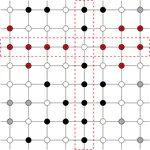
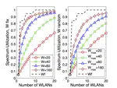
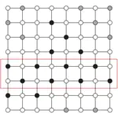
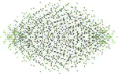

Alessandro Zocca
Alessandro Zocca
Home
Experience
Publications
Research projects
Teaching and supervision
Contact
2
Low-temperature behavior of the multicomponent Widom–Rowlison model on finite square lattices
(2018)
A. Zocca
Journal of Statistical Physics
How does the asymptotic tunneling between the two stable equilibria scale for this interacting particle system?
arXiv preprint
PDF
DOI
bib

On the Interactions Between Multiple Overlapping WLANs Using Channel Bonding
(2016)
B. Bellalta
,
A. Zocca
,
A. Checco
,
J. Barcelo
IEEE Transactions on Vehicular Technology
How to improve the performance of multi-channel CSMA algorithm with channel bonding?
arXiv preprint
PDF
DOI
bib

Hitting Time Asymptotics for Hard-Core Interactions on Grids
(2016)
F.R. Nardi
,
A. Zocca
,
S.C. Borst
Journal of Statistical Physics
How to expand the metastability theory to the case of multiple stable equilibria and how to apply to the finite-volume hard-core model?
arXiv preprint
PDF
DOI
bib

Delay performance in random-access grid networks
(2013)
A. Zocca
,
S.C. Borst
,
J.S.H. van Leeuwaarden
,
F.R. Nardi
Performance Evaluation
How does temporal starvation in wireless networks scale with the network size?
arXiv preprint
PDF
DOI
bib

«
Cite
×